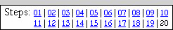
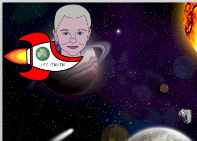
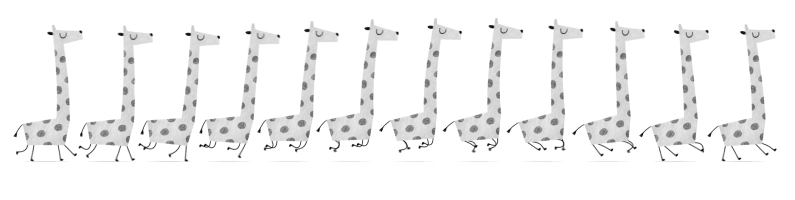
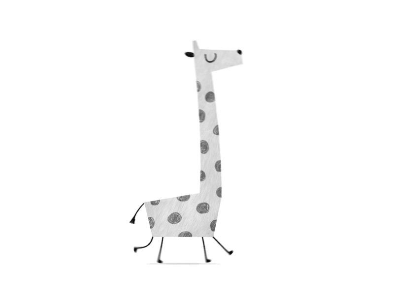
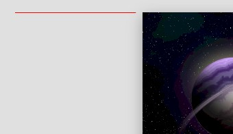
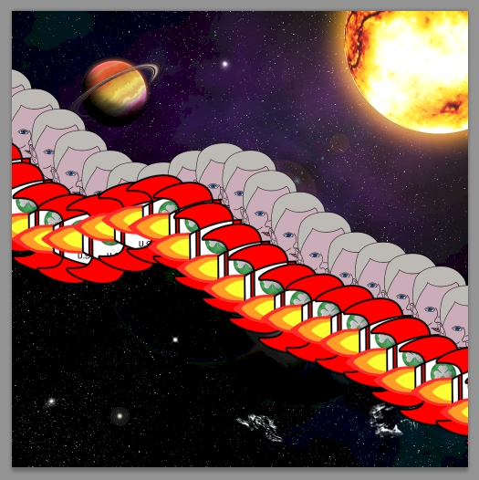
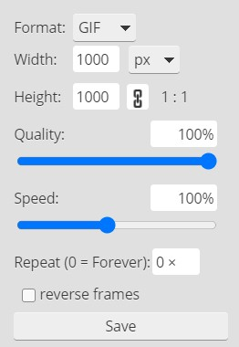
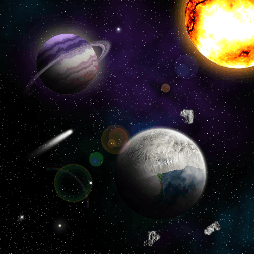
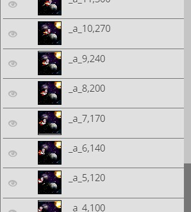

| PART III: The ANIMATION | |
| Step 20: Flying Through Space |  |
All we have left to do is bring our spaceship into our space scene and make it move. While intricate and complicated animations are certainly possible in Photopea, let's do something simple so we can get an idea of how creating motion in Photopea works. Keep in mind that the same process we are about to go through can be expanded to make the animation as complex as we want.
Let's start by turning all of the existing layers and layer folders of our Space17 file into a single layer. This will reduce the file size of our image which will help to prevent the program from lagging when we are creating the multiple layers we need to make our spaceship fly.
Flatten Image takes everything within the image, doesn't matter if it is an individual layer or an entire layer group, and turns it all into a single layer.
At this point we should save a new version of our space scene so that our Space17 file (that contains all of our separate layers) will still be saved in our folder in case we want to make changes to it at a later time (and so that our work up to this point can be graded).
AGAIN,
DO NOT SAVE YOUR SPACE17 FILE WITH THE
LAYERS MERGED -
YOU WILL NOT BE ABLE TO SEPARATE THE LAYERS LATER
AND YOU WILL LOSE POINTS WHEN YOUR WORK IS GRADED!
We now have our Step20.psd file with a single layer saved to our device, but also have our original Space17.psd file with all of the separate layers still intact. Now let's get our spaceship into our space scene. We want to continue working with the Step20 file, so let's take a second to close the Space17 file and open up the Step20 file.
Your wonderful spaceship image should now be sitting in the upper-left hand corner of your space scene...

Determine how large you want your spaceship to be - I am going to leave mine the size it is - feel free to make yours smaller if you wish (DO NOT make it larger), but be sure that no matter what size you make it that you can still read your name easily
To create an animation in Photopea, we first need to create the individual layers that will become the frames of the animation. When viewing an animation, nothing is actually 'moving', instead you are being shown a series of pictures where the items that appear to move are in a slightly different place in each image. Talk a look at this image...

Notice how the cartoon giraffe is in a different position each time. If I show you each image quickly in order, you will see this...

Kinda freaky to realize that when you watch a movie or TV show that you are not actually watching anything move.....it's just a bunch of pictures flashed at you really quick (usually 24 pictures a second). We can use this method to make an animation in Photopea by placing each individual image on its own layer. When we export our image as a GIF, PNG, or WEBP file (all file types that support animation), Photopea detects all layers starting with _a_. By using _a_ in the name of the file, Photopea knows we want our image to animated. Every layer, or even a layer folder, whose name starts with _a_ will be a frame in the animation. The first layer named with this pattern is shown in the first frame (others starting with _a_ are hidden on that frame), the second layer is shown in the second frame, and so on. This is why we named our first layer _a_1 back in direction 12.
We now need to move our spaceship into the correct position to start our animation. We want our ship to appear to come in from the left and fly off the right, so we need to start with it off the screen to the left then have it gradually appear as it flies to the right. If you are not getting this, don't worry - you will understand as we do this.
The red line along the edge is letting you know that the right edge of your spaceship file is aligned with the left edge of your space scene file. This system works in other locations while your image is off the canvas. For example, if you drag your spaceship to the top of your canvas a red line will appear...

This red line indicates that that the top of the object you are moving (which for us is our spaceship) is now aligned with the top of the canvas. These red lines are very helpful in getting things lined up. Note that a red line will appear in the center when your spaceship is aligned in the center, and a red line will appear at the bottom when the bottom of the spaceship is aligned with the bottom of your canvas. Remember that you can place your spaceship anywhere you want along the left edge of your space scene.
We now need to create additional layers and gradually move our spaceship across the screen.
Try to move your spaceship by the same amount each time so that the animation runs smoothly. If you move it too far on any of the new layers then your ship will appear to leap great distances as it flies through space. When you reach the other side of your space scene you should have multiple numbered layers and your image should look something like the image below...

Remember that your spaceship can follow any path you like - you can even have it do loops or get smaller so that it appears to fly away from us, then larger again if you want. You can even have it disappear behind one of your planets (be sure to make it really small at it goes into orbit) and appear on the other side.
Let's take a quick look at our animation to make sure everything moves like we want.
If you allow the Save for web window to sit for just a second, you should see your ship fly by. Because our image is so large, we can't see the entire scene. This is easy to fix.
Using the various options in the Save for web window, we can control the appearance of our animated image.
|
 |
Format - Defines the type of image we are creating Width and Height - Allows us to change the size of the image Quality - Lowering the percentage will not only create a lower quality image, but will also decrease the file size of the image (this is helpful if file size is more important than image quality) Speed - Controls how quickly our object moves through the image, so in our case clicking and dragging the slider will either increase or decrease the speed at which our spaceship travels through our space scene Repeat - Defines how many times the animation repeats (setting this to 0 causes the animation to repeat continuously) reverse frames - Will flip our frames so that the animation runs in the opposite directions (in other words, your spaceship will fly backwards if you select it) |
We are going to leave most of the setting above alone, but we do need to make a small adjustment to the Speed. We want our spaceship to move as smoothly as possible through our space scene (and we want it to get quickly to the other side). With Speed set to 100%, this is the animation we get...

If we get our spaceship to move a little faster, we can smooth out the animation. By default, each frame will be shown for 50 ms before being replaced by the next frame. In fact, Photopea allows you to specify the exact amount of time each layer will be visible in the animation. To do this, simply place a comma after the layer name and then indicate the number of milliseconds (thousands of a seconds, so 1000 would be one second) the frame should display before being replaced by the next frame. For example, if I named my first layer _a_1,500 then that frame would stay on screen for half a second.
Being able to specifically control the amount of time each frame displays is important, because it allows us to create variations in our animation...
Notice how the spaceship in the above animation comes in quickly, slows down as it reaches the center, and then speeds up again as it exits the scene. I did this by gradually increasing the number on each layer to make that frame display longer, as you can see from the several layers shown below...

When my spaceship reached the center of the image, I simply reversed the numbers so that it sped up as it exited. For this project, you do not have to worry about trying to pull off anything like this (though if you have time and want to try, go for it), we will go with the much easier method of letting Photopea set the same value for all frames.
Note that when you change the Speed that Photopea will pause for a second and then show you the animation at the new speed, so don't freak out when things don't happen instantly.
We are now done with the Astronaut Space Scene project - good job!
|
If you have completed this project ahead
of the deadline, now is your chance to add in some additional details to
make your space scene stand out from the rest. A bunch
of great ideas and some additional instructions on how to do them can be found
on the super secret bonus Step 21 page.
We have two more
short assignments in Photopea which will teach us some additional
tools - Once you have completed your Astronaut Project work, begin the
next project - and have fun!! |
01 | 02 | 03 | 04 | 05 | 06 | 07 | 08 | 09 | 10 | 11 | 12 | 13 | 14 | 15 | 16 | 17 | 18 | 19 | 20